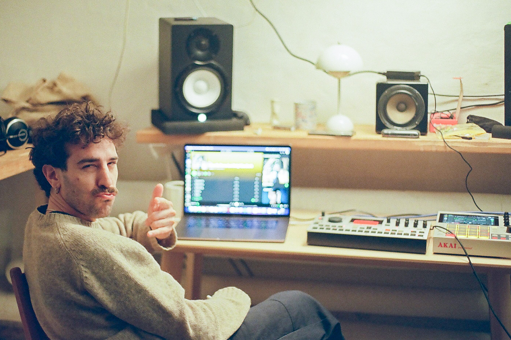

About Microwave

Microwave started from the idea of sharing a collection of synthesizers and making them available to people in Copenhagen — giving musicians access to instruments they might otherwise never get their hands on.
Inspired by the Waldorf Microwave and the optimism of mid-century technology, Microwave is about keeping physical electronic instruments in use and in circulation.
More cables, more knobs, a little less computer.